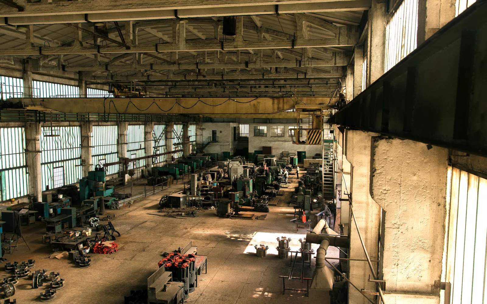

Why sell with us?
You get an open-market price you can defend, one managed process from appraisal to settlement, and it costs you nothing.
Your lots stay where they are while we run a competitive online sale that reaches far more buyers than a local trade sale, and we handle the listing, the marketing and the paperwork.
-
Selling costs you nothing
No selling fee, no listing fee, no entry fee and no commission. You receive 100% of the hammer price together with any applicable VAT, and the charges that fund the sale sit on the buyer's side.
-
You keep control of your stock
Your assets stay on your own site until they are sold and paid for, so you keep them under your eye for the whole sale.
-
You are paid before collection
The buyer pays us in full by bank transfer. Payment to you is ordinarily arranged within 24 hours of us receiving cleared funds, and collection is only authorised after that.
-
Nothing has to move
Lots are listed where they stand, from the details and photographs you provide, so there is no transport or storage bill before a sale.
-
UK-wide and overseas reach
Online bidding means a trade buyer anywhere can compete, and we are EORI registered so overseas buyers can bid on and export UK assets. A wider pool tends to lift the price.
-
A record of what happened
A lot-by-lot settlement report, plus the marketing record and the bidding activity each lot attracted. This matters to any owner and it is essential for insolvency work.
What can you sell with us?
Commercial and industrial business assets. If a business uses it, there is usually a trade or export buyer for it.
Plant and machinery
Excavators, telehandlers, dumpers, forklifts and materials handling.
Commercial vehicles and ex-fleet
Vans, tippers, HGVs and trucks.
Agricultural and farm machinery
Tractors, harvest machinery, implements and farm vehicles.
Catering and commercial equipment
Cooking lines, refrigeration, warewashing, stainless and bar fittings.
Industrial and workshop machinery
CNC, lathes, milling and metalworking equipment.
Mixed business assets
IT, electricals and whole-site contents from closures and liquidations.
How does selling at auction with us work?
Six steps, and you are told what happens at each one before it happens.
-
Appraisal
Send us an inventory or a description, with photographs if you have them. We confirm the assets suit auction and give you a read on likely interest.
-
Agree terms
We agree any reserves, estimates and the sale timeline with you in writing before anything goes live. There is no commission and no selling fee to negotiate.
-
Listing
We build the listings from your inventory, descriptions and photographs. Nothing has to be moved. Where a formal figure is needed, an independent professional valuation can be arranged.
-
Marketing and sale
Lots go live with published end times, marketed to our UK and overseas trade buyers. A valid bid in a lot's last ten minutes extends that lot by ten minutes, so a late bid cannot snipe it.
-
Payment to you
The buyer pays in full by bank transfer. On cleared funds we remit the hammer price together with any applicable VAT, ordinarily within 24 hours.
-
Collection
Only then is collection authorised, by appointment at your site, with a lot-by-lot settlement report for your records.
We act as auctioneer and agent for you throughout, and the sale contract is between you and the buyer.

How are your assets valued, and how is a reserve set?
We appraise each asset from the details and photographs you provide, then agree an estimate range and a reserve with you before the sale.
The estimate is a guide to the likely selling range, used to attract the right bidders. The reserve is the floor you set with us. We advise on it from what the market is doing for that asset, because a sensible reserve lets competition find the price while too high a one holds the bidding back.
You stay in control after the close as well. Where bidding stops below your reserve we bring you the highest bid, and you can take it or leave it. A lot that looks unsold on the day is often still sellable.
Where a disposal is part of an insolvency and a formal figure is needed for creditor reporting, an independent professional valuation can be arranged alongside the achieved figures.
What does it cost, and what will you receive?
It costs you nothing, and you receive 100% of the hammer price together with any applicable VAT.
There is no selling fee, no listing fee, no entry fee and no commission. The charges that fund the sale sit on the buyer's side of the invoice, on top of the hammer price, so what your assets make is what you receive.
Payment reaches you ordinarily within 24 hours of us receiving cleared buyer funds, and collection is authorised afterwards. You are paid before your stock leaves your site, not weeks after it has gone.
Administrators, receivers and insolvency practitioners
Selling in an administration or receivership
We can act at short notice, we report lot by lot, and the assets stay at the company's premises until they are sold and paid for.
For a formal insolvency we can list assets quickly, before value is lost to a site handover or a lease end. You receive the lot-by-lot results, the marketing record and the bidding activity each lot attracted, and settlement reporting that reconciles the proceeds against the asset schedule.
An open marketed auction gives you competing unrelated bidders and a documented trail, which is strong supporting evidence that the market was properly tested when a creditor asks how the assets were exposed.
Lots are listed from the details and photographs you or your agent supply, which keeps the description under your control throughout. You receive the marketing record and the bidding activity each lot attracted, within what confidentiality and data protection allow.

Can you reach overseas buyers?
Yes. Online bidding opens the sale to trade buyers anywhere, and we are EORI registered, so an overseas buyer can bid on and export a UK asset without attending.
A wider pool of bidders tends to lift the price, and assets with weak domestic demand here sometimes have strong demand abroad. Export buyers pay a VAT deposit that is refunded once they evidence the goods have left the UK, so the process is handled and your position is unaffected.
How do you get started?
Tell us what you have to sell. Send an inventory or a description with any photographs, and let us know your timescale.
We will confirm whether auction is the right route, give you a realistic estimate and set out a clear plan. For an insolvency, we can act at short notice. There is no cost to you at any stage.